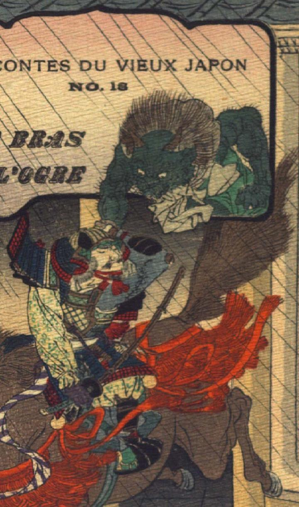

緑色の肌の鬼。禿げ上がった頭頂に2本の角が生えている。後頭部に生えた髪は逆立ち、耳は獣のように尖っている。目玉は丸く、鼻は潰れている。口とあごに薄くひげを生やしている。灰色の肩布と、緑色の袖なしの着物を身にまとっている。腕には毛が生えている。本の題名が書かれた枠から乗り出して、下にいる馬上の武士の頭に掴みかかろうとしている。
著作者：J.Dautremer／出典：親書誌：U426_nichibunken_0121：Le bras de l'ogre／日付：2003／資源識別子：U426_nichibunken_0121_0001_0000
Copyright (c)2010- International Research Center for Japanese Studies, Kyoto, Japan. All rights reserved.